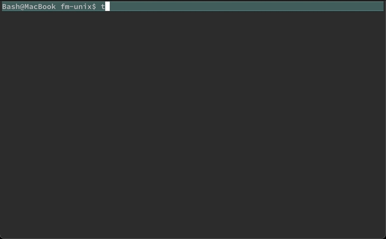
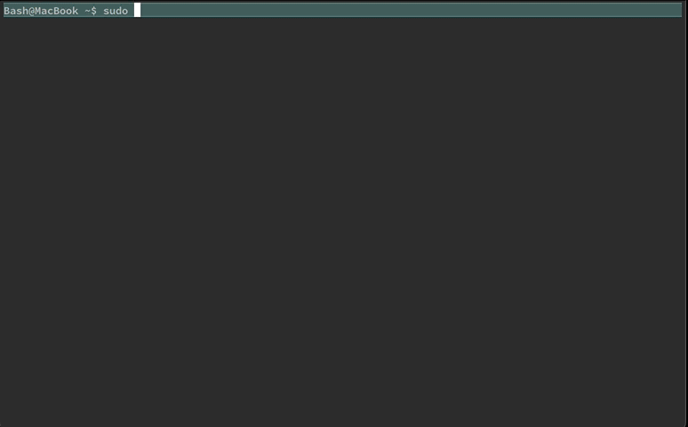
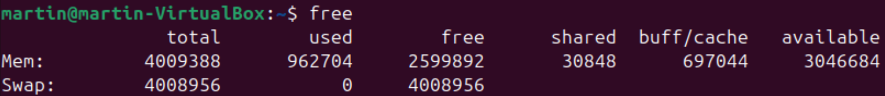
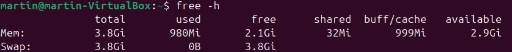

topSystem
This chapter covers monitoring performance and resource usage in the Linux systems. These commands will help ensure that the servers and applications are running efficiently and can help you preemptively address potential issues before they escalate into major problems.
We’ll delve into some of the most essential and widely-used system monitoring commands: top, htop, free, df, and du
Real-time monitoring
top
top displays a dynamic, real-time view of the system’s processes, including CPU and memory usage.

top in iTerm2htop
htop is a more user-friendly and visually appealing alternative to top.1

htop in GNOMEhtop enhances usability with features like color coding, an interactive interface, and the ability to scroll through processes.
Snapshots
free
free displays the amount of free and used memory in the system, giving you a quick snapshot of memory allocation and availability:
Bash  on Linux .
on Linux .

You can add -h to make it more human-readable:

df
df (disk free) shows disk usage in a human-readable format, including the size, used space, available space, and the mount point of each filesystem.
df
#> Filesystem 512-blocks Used Available Capacity iused ifree %iused Mounted on
#> /dev/disk1s1s1 976490576 20002808 84798224 20% 403755 423991120 0% /
#> devfs 395 395 0 100% 684 0 100% /dev
#> /dev/disk1s3 976490576 5059568 84798224 6% 5077 423991120 0% /System/Volumes/Preboot
#> /dev/disk1s5 976490576 2097312 84798224 3% 1 423991120 0% /System/Volumes/VM
#> /dev/disk1s6 976490576 39200 84798224 1% 19 423991120 0% /System/Volumes/Update
#> /dev/disk1s2 976490576 861746736 84798224 92% 5662798 423991120 1% /System/Volumes/Data
#> map auto_home 0 0 0 100% 0 0 - /System/Volumes/Data/homeBy default, it displays sizes in 1K blocks but can show them in a more readable format (like MB or GB) with the -h option (human-readable).
df -h
# Filesystem Size Used Avail Capacity iused ifree %iused Mounted on
# /dev/disk1s1s1 466Gi 9.5Gi 35Gi 22% 404k 367M 0% /
# devfs 197Ki 197Ki 0Bi 100% 682 0 100% /dev
# /dev/disk1s3 466Gi 2.4Gi 35Gi 7% 5.1k 367M 0% /System/Volumes/Preboot
# /dev/disk1s5 466Gi 2.0Gi 35Gi 6% 2 367M 0% /System/Volumes/VM
# /dev/disk1s6 466Gi 20Mi 35Gi 1% 19 367M 0% /System/Volumes/Update
# /dev/disk1s2 466Gi 415Gi 35Gi 93% 6.2M 367M 2% /System/Volumes/Data
# map auto_home 0Bi 0Bi 0Bi 100% 0 0 - /System/Volumes/Data/homedu
du summarizes disk usage for directories and files, allowing you to pinpoint large files and directories that may be consuming excessive disk space.
du data
# 128 data/raw
# 240 dataJust like df, show the output in a more readable format (like MB or GB) with the -h (human-readable) option:
du -h data
# 64K data/raw
# 120K dataps
ps reports a snapshot of the process status for all running processes, regardless of the owner, including the process ID (PID), terminal type (TTY), cumulative CPU time (TIME), and the command (CMD) that started each process:
ps
# PID TTY TIME CMD
# 10409 ttys000 0:00.01 -bashCommand options can also expand the selection to include other users’ processes, full command lines, etc.
ps -o lstart,sess,pmem,pcpu,etime,command
# STARTED SESS %MEM %CPU ELAPSED COMMAND
# Fri Aug 30 13:08:56 2024 0 0.0 0.0 38:09 -bashThe specified columns are:
lstart: The exact date and time the process was started
sess: The session ID of the process
pmem: The percentage of the physical memory used by the process
pcpu: The percentage of the CPU time used by the process
etime: The elapsed time since the process startedcommand: The command and arguments
Recap
In this chapter, we explored five essential system monitoring commands in Linux: top, htop, free, df, and du. These commands provide crucial insights into system performance and resource utilization, enabling efficient monitoring and troubleshooting of Linux systems.
Mastering these commands will help you monitor and maintain optimal system performance, ensure efficient resource utilization, and quickly address potential issues.